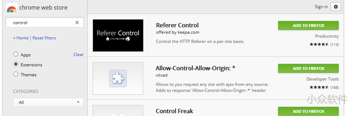
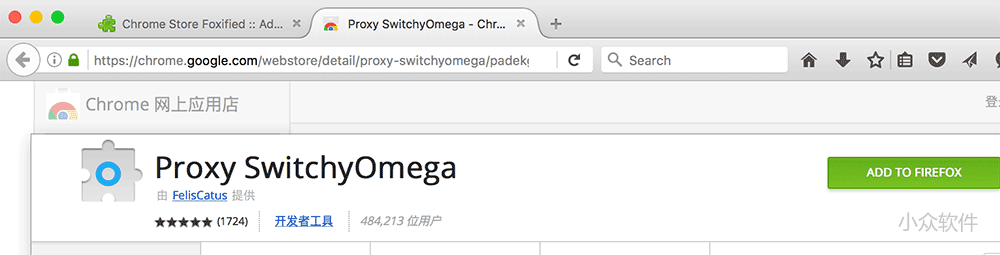

Firefox 与 Chrome 标准版的版本号大战已经到了 46:50，而 Firefox 需要到 48 才会放出 WebExtensions 的稳定版本，也就是可以兼容 Chrome 扩展的 Firefox，大概会是今年 8 月份。

现在只需要安装 Chrome Store Foxified 扩展，就能直接在 Firefox 里安装 Chrome 扩展。
不过，还是需要先登录 https://addons.mozilla.org/ 然后就可以打开 Chrome 网上应用店里。

点击 ADD TO FIREFOX 后，Chrome Store Foxified 就在后台工作了，最终会在 addons 里提交一个临时扩展，并且安装在你的 Firefox 里。
另外还会在桌面生成 xpi 文件，开发者必备扩展。
不过青小蛙测试的这个扩展安装成功但并没有弹出正常的设置页面…失败了。
火狐迟早药丸
天朝之下，FF活得比chrome舒服多了。
默默地期待chrome那边也出兼容ff插件的插件……
这个估计不大现实 ff的插件很多超出沙盒的操作
已经卸载Firefox很久了，现在启动Firefox还是会很久才打开吗？
开了不关就可以了
固态硬盘秒开呀。。。
一直用FF，都是秒开
Chrome已经到51了
显示Connecting to addons.mozilla.org to get singning key.
错误的，然后再选项里，勾选 Do Not Sign ，就可以啦。
一直显示not signed yet，这个貌似是签名？不过问题不是签名吧（我一直都是关了签名验证），而是转换过来的扩展能用吗？直接安装桌面的xpi竟然安装成功也有图标，不过文字乱码，按钮也不能用。总之看看就好不能报太大希望
很多人并不了解mozilla在做什么；
以及这个扩展事实上是干什么用的…….
firefox比chrome差在哪里呢？那就是没有一个google那样的爹；事实上现在无论性能还是可玩性firefox都不输chrome，而把性能和可扩展性加起来，chrome就被爆的连渣都不剩了……
还拿启动时间黑只能说，内存占用你们不是说就是要拿来用么？不换ssd怪我咯？
不过这一切都是理论上的，实际使用上，简直就是灾难。毕竟adobe收了google的钱之后在firefox的在flash里下毒了，除了这个我实在找不出为啥flash在firefox这么坑的原因….
麻蛋，flash早该死啦死啦的了，禁掉它之后速度飞快，而且还不卡；
可是国内N多网站就是不换，气死个人啊
对Firefox很有感情的，但是Firefox的Flash插件三天两头搞个事情出来，导致动辄不响应、死机什么的…真的吃不消，只好用Chrome了。
火狐的Flash插件真是太成问题了，每开必挂，我都不装了，用个H5脚本，不行就换Chrome吧。
这个H5脚本是什么可以详细说一下吗？
那么能不能给FIREFOX用CHROME的FLASH的DLL呢？LINUX下面是可以的啊。
火狐已经穷困到要兼容Chrome的扩展了？
有病吧您？
chrome有的扩展，firefox也有，chrome没有的扩展，firefox还是有有，要论功能强大性上，chrome的扩展还不够给firefox提鞋。
随便举一个例子：Zotero
版本号兼容性是硬伤。
然而SwitchyOmega在火狐上并不能找到可以与之媲美的替代品
FoxyProxy 我觉得比SwitchyOmega好用
FoxyProxy好用
我挺你，SwitchyOmega好用得多
Pan可替代,兼有广告过滤和代理功能
gfwlist 项目已经迁移到了github，然而pan上面的订阅url还是googlecode，而且不能自己改…………
明显你不会
filter preferences-》Add filter subscription——》Add a different filter subscription
我记得Firefox之所以要开始支持WebExtensions的扩展是因为Mozilla打算放弃原有扩展的支持……
作为Firefox的死忠，对Mozilla的决定表示完全不理解啊……
那时只能放弃升级了。
实在坚持不住就放弃火狐
有那个必要吗？
反过来还差不多，就chrome那些扩展？？
那就再等等吧，8月也不算远
其实Firefox下的扩展功能很足够了，再不行可以装GM加脚本，再不行装UC加UC脚本，再再不行自己写……
是的，我自己写了一些脚本
真正被我放弃的浏览器只有IE，然后开始使用Firefox，然后就没有然后了，对其它浏览器一概不关注，功能、性能、界面、扩展，强大、强悍、美观、取之不尽用之不竭。。。
浏览器，我只认 Firefox